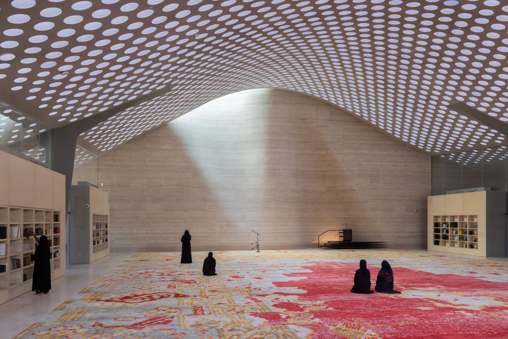
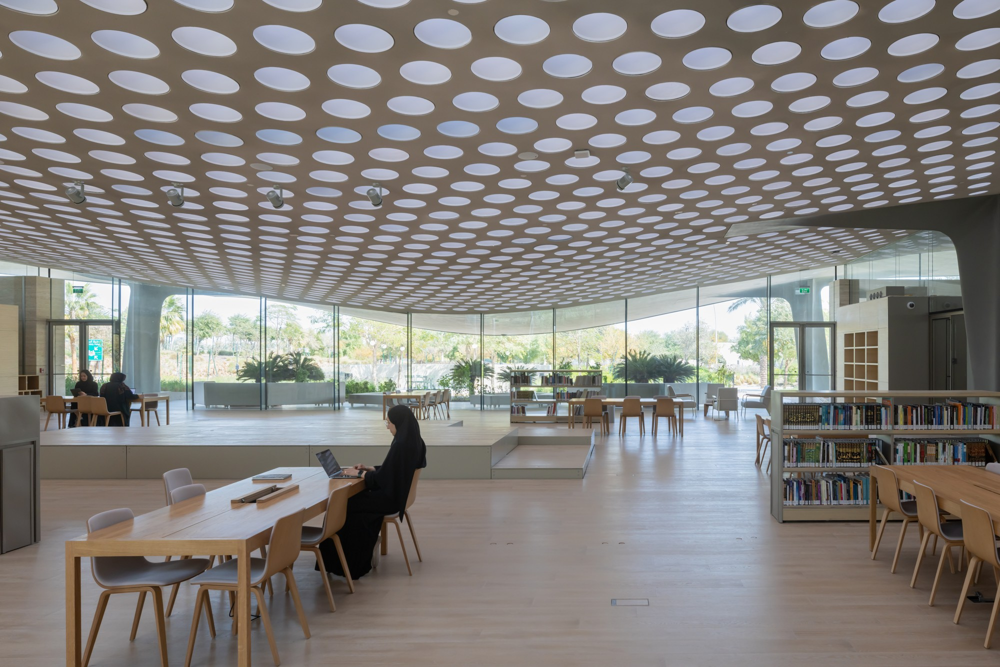
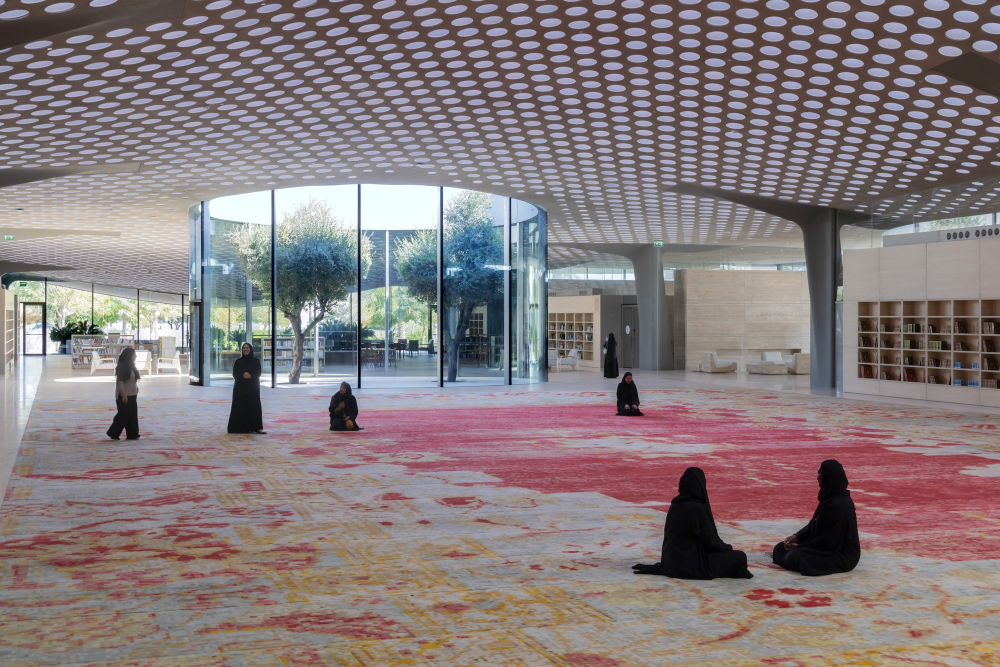
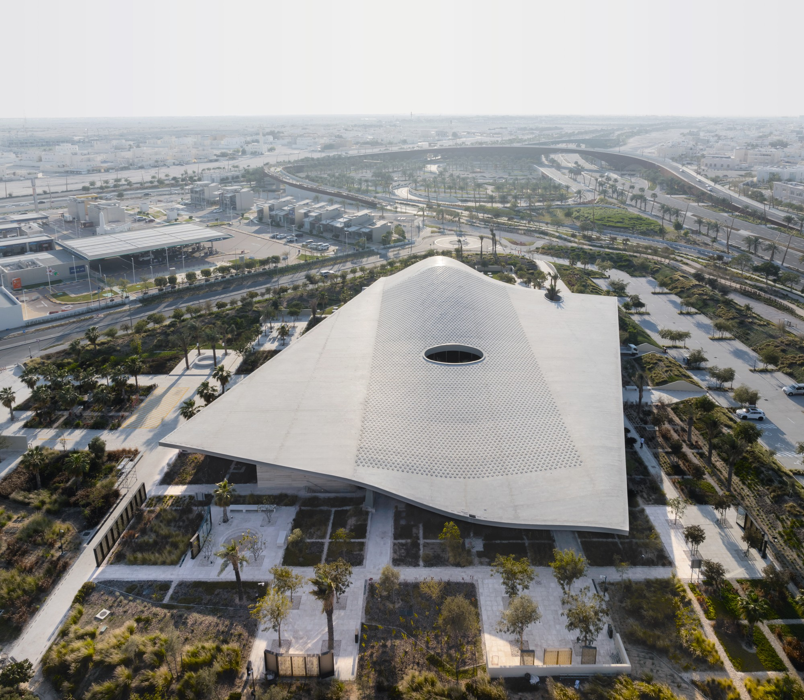

Al-Mujadilah Center and Mosque for Women

Al-Mujadilah Center and Mosque for Women in Qatar is the first purpose-built contemporary women’s mosque in the Muslim world. Created to foster a more inclusive Muslim society where women can contribute to shaping contemporary Islamic thought and discourse, Al-Mujadilah is situated in Education City, a 12-square-kilometre campus in Doha comprised of educational and research institutes.
The 50,000-square-foot building features a prayer hall, classrooms, open-air courtyard and multi-purpose spaces. Its signature roof admits and controls light in the main hall. It flattens and extends beyond the building’s footprint to provide shade for exterior spaces and peripheral programs. A field of more than five thousand light wells embedded in the roof slab modulate the abundant natural light to provide a soft, diffuse luminosity in the main hall. The main hall is rotated 17 degrees off axis to point the Qibla wall toward Mecca for prayer. In the Islamic tradition of mosques constructed in harmony with nature, Al-Mujadilah is centered around two olive trees that pierce through the roof and reach toward the sky.

As Al-Mujadilah’s main space for worship, the 9,400-square-foot prayer hall features an undulating Qibla wall, of which the asymmetrical curvature forms two key focal points: the mihrab (the niche indicating the direction of prayer towards Mecca) and the minbar (the platform used by the Imam to deliver the Friday sermon). At the mihrab curvature, a skylight bathes the niche in natural light during the day, clearly identifying it as the primary architectural and religious focal point of the space. DS+R’s design for the custom 115 foot by 66 foot carpet scaled a traditional prayer rug from the typical size for a single worshipper to cover the collective space of up to 750 worshippers in the prayer hall. Made of hand-tufted New Zealand wool, the pattern was recontextualized with a process of pixelation and shifting in intervals of each prayer row. The carpet’s central mihrab figure further reinforces the Qibla.
The prayer hall and multi-purpose space are lined by a curated library of Islamic texts that encourages research and study. With a capacity of more than 8,000 volumes, the extensive collection covers Islamic history, the history of women, and fiction and nonfiction books by Muslim female authors. Equipped with a retractable stage, modular furniture and temporary walls, the flexible multi-purpose space supports Al-Mujadilah’s educational program with the ability to host lectures, talks, classes, and workshops. During Ramadan, an extension of the prayer hall carpet is laid down in this space to increase the capacity of worshippers from 750 to approximately 1,300.

Embedded in an area carved from the dune near the southern entrance is a minaret conceived for this unique building. Traditionally, a muezzin would climb up the minaret to deliver the call to prayer five times each day. From the height of the elevated balcony, his voice would broadcast the call to the entire community. Over time, however, muezzins were replaced by electronic amplification and a recorded message. The Al-Mujadilah minaret reinterprets the ritual of human ascent up the tower. Instead of a muezzin, a cluster of electronic speakers “climbs” 128 feet to the top of a diaphanous steel-mesh tower five times daily. From the summit, the call to prayer is broadcast to the surrounding community. Afterward, the speakers descend back down to the garden. The tower is suspended in the air by cable stays that are anchored to a retaining wall. The tensegrity structure features a screen with a custom perforated pattern that recalls a mashrabiya, an element found in traditional Islamic architecture.
Al-Mujadilah Center and Mosque for Women was initated by Her Highness Sheikha Moza bint Nasser, Chairperson of Qatar Foundation and designed by Diller Scofidio + Renfro.

Project information
Location: Al-Mujadilah Center and Mosque for Women, Doha, Qatar
Commission: June 2020
Construction begins on-site: January 2022
Structure tops out: September 2022
Al-Mujadilah opens to the public: January 2024
Al-Mujadilah library opens: November 2024
Credits
Project Director: Evan Tribus
Project Architects: Michael Hundsnurscher and Yushiro Okamoto
Design Team: Lilian Fitch, Danielle Schwartz, Magdalena Naydekova, Rawan Elnatour, Miles Nelligan, Anthony Saby, Andreas Kostopoulos, Michael Robitz, and Kevin Rice
Competition Team: Jedidiah Lau, Danielle Schwartz, and Will Le
External Credits
Lead Consultant: Halcrow
Landscape: Atelier Miething
Structural and Facade Engineer and Concept & Schematic Design: Werner Sobek
Technology Specialist,AV,and Acoustics: Charcoal Blue
Lighting: Buro Happold
Visual Identity and Building Signage: TC & Friends
Signage: IN-FO.CO
Sustainability/LEED: Qatar Green Leaders
Project Management: ASTAD
Minaret, Minbar, and light cone fabricator: Metalex